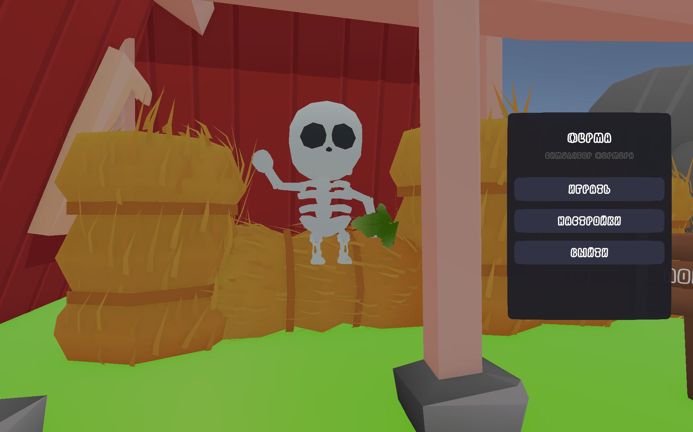
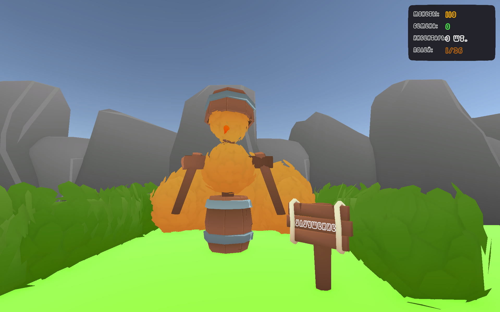
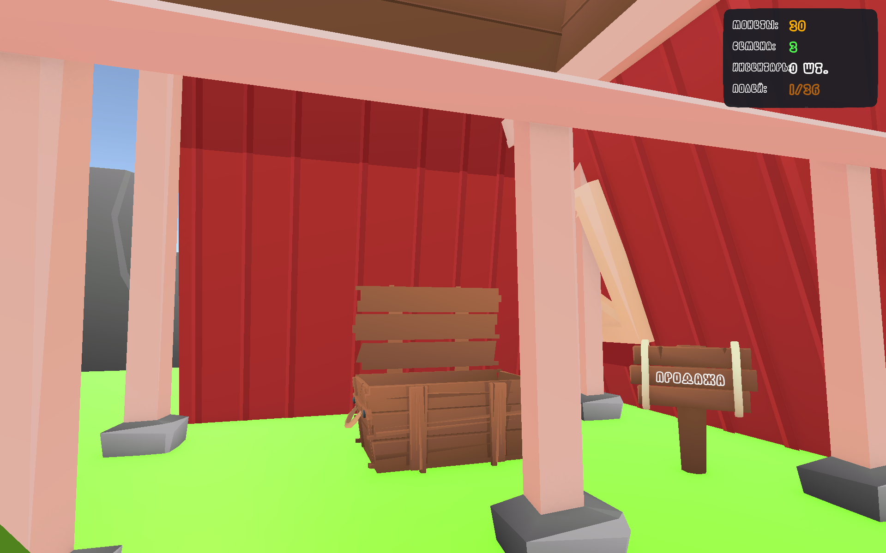

02 Скриншоты
Нажми на скриншот, чтобы увеличить.




Симулятор фермы · помощь скелету Костяну
Костян — добрый скелет, унаследовавший ферму. Но беда: у него пустые глазницы — он ничего не видит и сам вырастить урожай не может. Зато у него есть семена, сундук с монетами и место под торговую палатку. Стань его руками: купи семена, вырасти морковь и продай её обратно Костяну!
«Ферма» — это уютный 3D-симулятор про маленькую ферму в низкополигональном мире: красный амбар, соломенное чучело с бочкой, скалы вокруг и грядки с морковью. В центре истории — скелет Костян, который мечтает о богатом урожае, но сам землю обрабатывать не может: он не видит.
Поэтому всё хозяйство — на тебе. Ты покупаешь у Костяна семена за монеты, сажаешь их на поля, ждёшь, пока морковь вырастет, собираешь урожай в инвентарь и продаёшь его обратно — уже в сундуке под табличкой «ПРОДАЖА». Заработанные монеты вкладываешь в «УЛУЧШЕНИЕ» у чучела: больше полей, выше отдача — ферма растёт у тебя на глазах.
Монеты → семена. Начальный капитал даёт сам Костян.
Выбери свободное поле и посади морковь (всего до 36).
Дождись созревания и положи морковь в инвентарь.
Сундук «ПРОДАЖА»: морковь → снова монеты.
Бочка «УЛУЧШЕНИЕ»: новые поля и бонусы за заработанное.
Требования: Windows 10/11 (64-bit), любой современный ПК со встроенной или дискретной видеокартой. Интернет для запуска не нужен.
Нажми на скриншот, чтобы увеличить.



Полный билд игры для Windows: распакуй архив и запусти
ферма/Farm.exe. Прямая ссылка на этот же файл — на Google Drive.